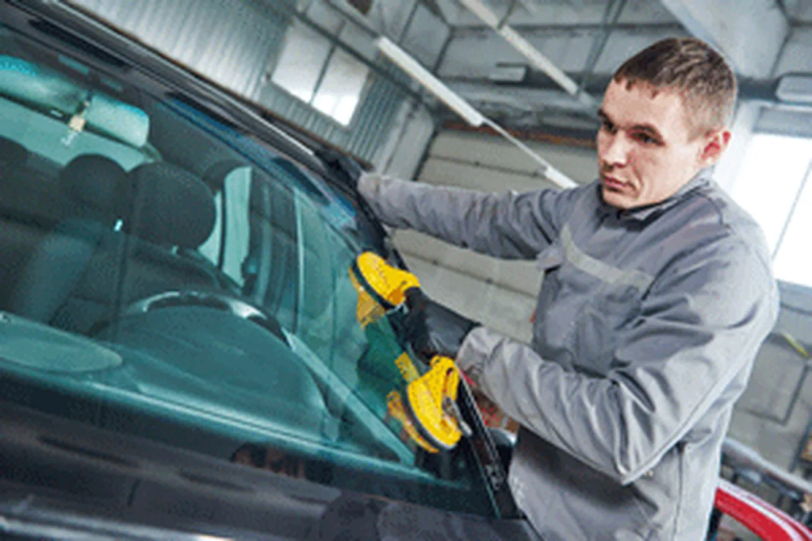
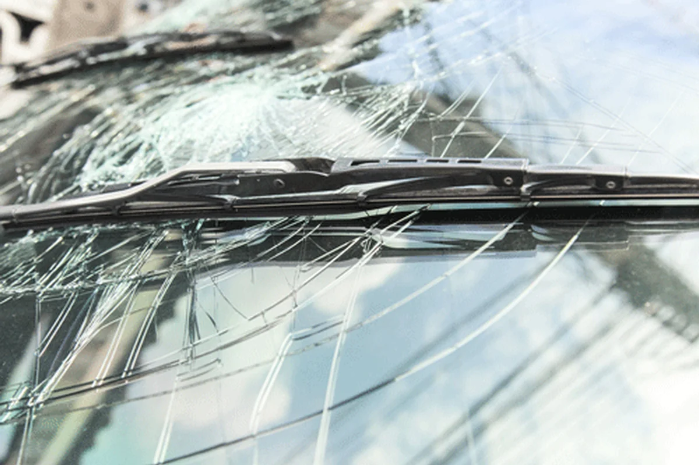
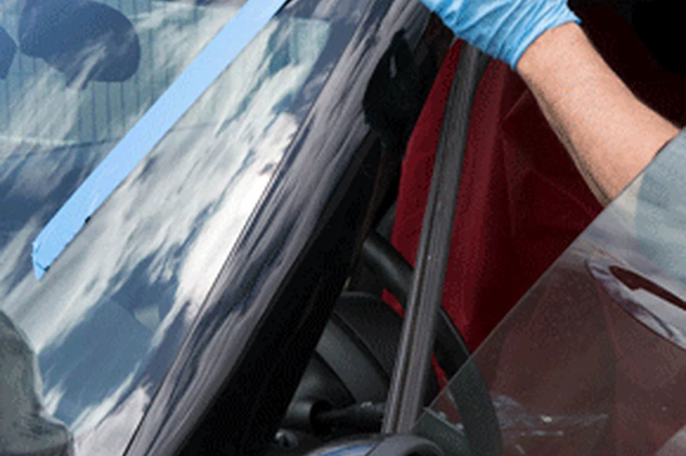

Mobile Auto Glass in Mar Vista CA
Services

Visit Us
Windshield Replacement in Mar Vista Area.
Mobile Windshield Replacement in Mar Vista Area
Professional mobile windshield service.
Mobile car glass services within your area.
Replacement options for vehicles with this feature.
Replacement options designed to support the vehicle feature.
Auto Glass Replacement and Windshield Replacement in Mar Vista, California
Our mobile windshield replacement service in Mar Vista, CA and nearby cities in the best in town and the fastest as well. We can give you a quote over the phone and provide you same day mobile service when we have your glass part in stock. Contact us and find it out today. Our technicians are professionally tained to perform any windshield replacement in Mar Vista or car glass repair in Mar Vista, CA. We also offer a lifetime warranty on all our replacement. That means you dont have to worry about any leaks on your windshield for as long as you own the vehicle.
Auto Glass Replacement and Windshield Replacement in Mar Vista, California Your car's glass plays a crucial role in ensuring your safety on the road. That's why getting it fixed or replaced requires the service of a professional and experienced auto glass replacement company. If you're in Mar Vista, California, you're in luck because we offer auto glass replacement, windshield replacement, and mobile car glass services within your area. We are a well-established auto glass repair and replacement company with over ten years of experience. We understand that auto glass issues can occur unexpectedly, and that's why we offer a fast and convenient mobile service to make the process as easy as possible. Our mobile auto glass replacement service in Mar Vista, California is free, allowing you to receive our services at your convenience without having to leave your home or work. Our fully-equipped mobile units come to your location, making sure to vacuum all shattered glass, so you can have peace of mind that your vehicle is safe to drive after our work is complete. At our Mar Vista-based company, customer satisfaction is our top priority, so we only use premium quality glass for all auto glass replacement services we provide. Our glass meets all safety standards and OEM equivalents, so you can have confidence in the durability and longevity of the auto glass we use to fix your vehicle. Aside from auto glass replacement, we also specialize in the replacement of windshields. Our skilled technicians handle all types of windshields, from safety laminated windshields to tempered glass windows. We also offer Rain Sensing Windshields, which activate the windshield wipers automatically when the car senses that there is rain. We also offer Lane Departure Warning System windshield, which provides an alert when you are drifting out of your lane, helping you to stay conscious about your driving and ensuring your safety on the road. In conclusion, if you're in Mar Vista, California, and need auto glass replacement, windshield replacement, or mobile car glass services, we are your go-to professionals. Our decade-long experience and professionalism have helped us become the best solution for all of your auto glass problems. Plus, our mobile auto glass replacement service in Mar Vista, California scores more points in terms of convenience and customer satisfaction. Please don't hesitate to contact us today to schedule your appointment.
Gallery

